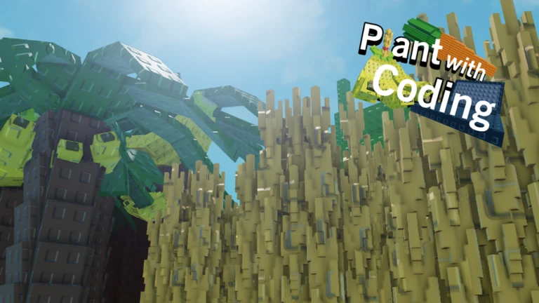

Plant with Code [BETA]
Plant with Coding es un juego creado por el grupo de Roblox Lated Graham, fundado por TheEmreTutuk, basado en Grow a Garden pero con programacion Luau.

Plant with Coding es un juego creado por el grupo de Roblox Lated Graham, fundado por TheEmreTutuk, basado en Grow a Garden pero con programacion Luau.
